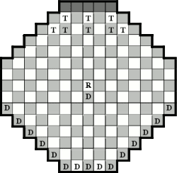

|
ThudSharp Docs ThudSharp Docs
|
|
|
Koom Valley Rules |
|
Copyright 2004/2005 Terry Pratchett,
Trevor Truran and Bernard Pearson A GameEvery Koom Valley Day dwarfs and trolls from around the Disc gather at the original site of the battle. But this is not for any feeble re-enactment but another serious attempt to settle old scores. On this occasion the dwarfs are trying to escape from Koom Valley with the Rock. They believe that one of the ancient magical talking cubes they have been seeking for years is hidden in it. The trolls are trying to stop them, not because they know what may be in the Rock, but because they object to the dwarfs removing any large lump of stone, which may indeed, be some troll's grandfather having a bit of a quiet think. Object of the game.For the dwarfs to win they must move the rock to the far side of the valley (shown in dark grey on the layout diagram below). Ie onto any of the five squares on the opposite side of the board against which the dwarf commander is sitting. For the trolls to win they must capture the rock by placing three trolls adjacent to it (in any direction including diagonally). If neither side can achieve their objective the game is drawn. 
Equipment.
DWARF COMMANDERMovesDwarfs have the first move. A troll may be moved one, two or three squares in any straight line, horizontally, vertically or diagonally. A dwarf may move any distance in a straight line, horizontally, vertically or diagonally. No piece may jump over any other piece including the rock. The Rock may only be moved by the dwarfs (instead of moving a dwarf piece). It may move only one square in any direction. To be moved it must be next to a dwarf and it must also be next to a dwarf at the end of its move. CapturesA troll captures a dwarf by trampling over it. It moves in a straight line from a square next to the dwarf, through the square the dwarf is on and lands on the empty square immediately beyond. The trampled dwarf is removed from the board. Several captures may be made in one move and a change of direction is allowed between captures. Dwarfs capture a troll by moving a dwarf so that the troll is trapped between two dwarfs in any straight line (including diagonally). The three pieces, two dwarfs and a troll, must all be in line. If the dwarf that has been moved also traps another troll between itself and another dwarf, that troll is also captured. The rock plays no part in any captures. A piece may safely be moved to come to rest between two opposing pieces. Captures are only made when the capturing side moves a piece. The rock may be moved and come to rest next to three trolls. It can only be captured when a troll is moved. Captures are not compulsory. For further hints, tips and information about getting your own game set visit our Thudgame Emporium Rules taken from: http://thudgame.com/rules |